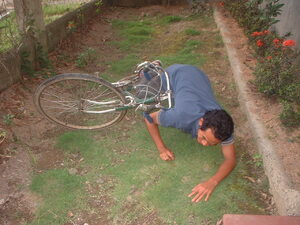

peled 
/pɔlɔd/
v_rt.
“overturn”
v.
for someone (egpeled, migpeled/impeled, agent, agent, eg><ø-) to cut down something tall (especially a tree) (egpeleren, impeled/migpeled/pigpeled, theme, eg><en-)
Ka egpepeled iyan ka egpameled/egpamuwalas te kayu eyew egmaawang ka kamet. Eggimuwen seini ke egkeimpusan te egkalepung e ka egkametan ne iyan naan dè egkasamè ka derakel wey mallayat ne me kayu.
Kenè e pad egpepeled kuntee su mig-uran nahud.
I will not cut down tall trees because it rained today.
Eng. cut down; fell; topple
Online dict status: -
Usage level: M
v.
for someone (egpepeled, migpepeled/impepeled, agent, eg><ø-rdpCV-) to cut down something tall continously (especially a tree)
Eng. cut down, to (continously)
Online dict status: -
Usage level: M
vi.
for someone or something (egkapeled, napeled, patient, egkA><ø-) to fall over
Eng. fall over; tumble; faint; topple
Tag. tumbá; mádapâ
Ceb. madagmà; dasmag
OCM: Construction (331), Postures (516)
Online dict status: -
Usage level: M
1.
v.
for someone with a high status (egkapeled, napeled, patient, egkA><ø-) to die or fall from favor
Ka napeled maralem ne lalag ne layun eggamiten te me igbuyag eyew kenè amana mareet wey masakit ne egpaminehen ka egguhud. Ka etew ne egkamatey wey ke egkareetan egpekeiling degma te kayu ne egkapeled, sikan naa ka inggamit seini ne lalag.
Napeled e ka datu.
The chief has died.
Eng. die
OCM: Dying (763)
DDP: Die (2.6.6)
Online dict status: -
Usage level: R
adj.
(egkapeled-peled, napeled-peled, egkA-rdpRT-) staggering
Ka egkapeled-peled iyan ka mahuye wey kenè egpakasindeg te maheteng ke warè egkaandilan wey egkasandihan. Egkaayunan kayi ka minsan nekey ne egpakasasindeg/nakasasindeg iling te me kayu, hilamunen, pinamula, wey ka etew.
Egpekeiling ka anggam ku te uliben ne migtubù diyè te betey te bubungan ne egkapeled-peled te kalamag su kenè egpakasasindeg ne egsabsabeka.
My uncle is like a perennial grass grows at the peak of the mountain that is staggered by blowing wind for he cannot stand alone.(figurative)
Eng. staggering; stumbling
Online dict status: -
Usage level: R
Updated by: RJH,TME,QDL,RJH
Last updated: 21/Dec/2011
This page last updated: 19/May/2012
Copyright © 2009-2010, Matigsalug Language Christian Association, Inc